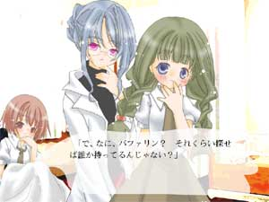

ホーム
人生に必要な技術 海の底の廃墟

これは保健室の物語。
飯島 琴子
「こんな大人にはなりたくない」と思うのは、子供だけではない。もし立派な大人が、飯島琴子を見たら、「こんな大人にはなりたくない」と思うのではないか。 けれど子供には、別の意見があるらしい。
「愛する者の愛は受動的である」と、ジョルダーノ・ブルーノはいう。愛されることは能動的な力の作用でありうる、と。 けれど、そんな力を使うのは、悲しいことかもしれない。 子供が愛されるのは、愛されないと生きてゆけないからかもしれない。
三田村 茜
近藤 明歌
「憎めない奴」というからには、その人には憎たらしいところがあるはずだ。憎いところがあって、それを打ち消してしまう魅力があるから「憎めない」はずだ。そういう種類の憎たらしさを、近藤明歌は持っている。 ところが彼女は、憎いところを打ち消す魅力のほうは、おぼつかない、心許ない。 その、心許ないところがいい。 大目にみてやる自分が、ちょっと偉くなったような気がする。